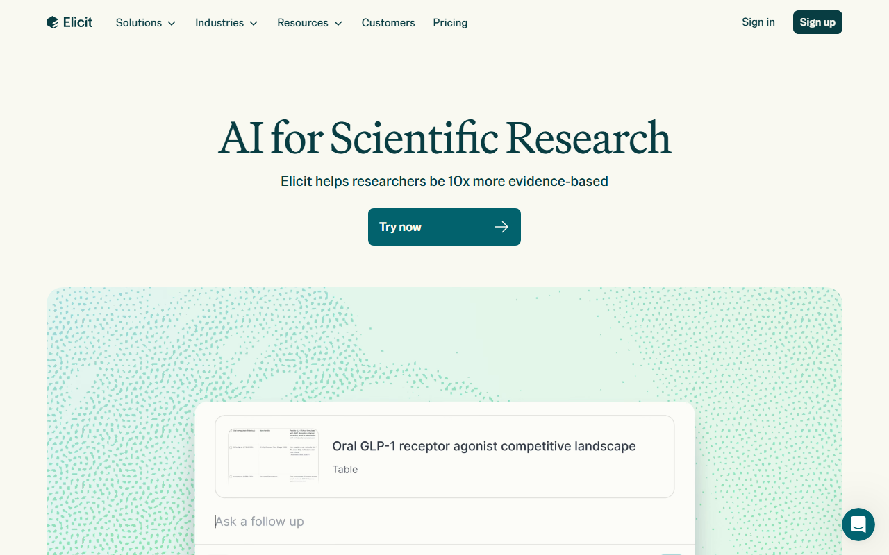
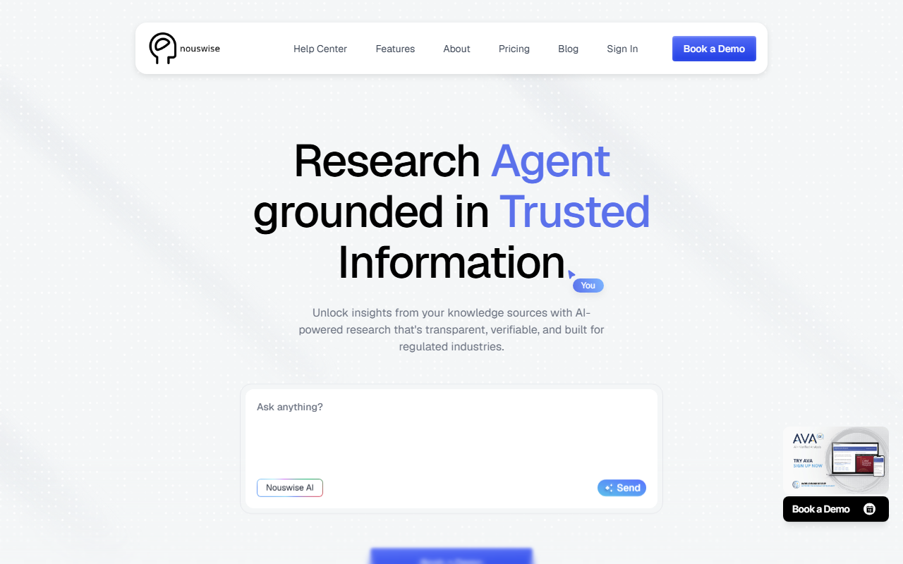

Consensus AIとは？論文検索の使い方・料金・日本語対応を解説
Consensus AIは、研究上の問いから学術論文を探し、根拠となる文献と一緒に回答を示す検索サービスです。無料枠、日本語出力、基本の使い方、回答を引用する前の注意点を紹介します。
Consensus AIとは？公開論文を根拠付きで探すサービス
- 検索対象：査読済みの学術論文
- 回答形式：要約と引用元を表示
- 無料枠：Papers検索は無制限
- 日本語：AIの出力言語に選択可
- 向く人：論文調査の入口を作りたい人
迷ったら、無料のPapers検索から試せるConsensusが候補です。質問への答えと候補論文を同じ画面でたどれます。
無料アカウントの入口と、論文を探す検索画面を開けます。

一般的な生成AI検索との違い
一般的な生成AIは、幅広いWeb情報や学習済みデータをもとに文章を返します。Consensusは研究上の問いを受け取り、査読済み論文の候補と結びつけて回答するのが中心です。
検索対象が、無料で全文を読める論文だけに限られるわけではありません。本文を分析できても出版社側では有料の場合があり、閲覧可否は論文ごとに異なります。
ただし、表示された要約が研究の結論を完全に表すとは限りません。引用元のタイトル、対象者、研究方法まで戻って読むことが前提です。
Consensusが向く人・向かない人
向くのは、調べたい問いは決まっているものの、どの論文から読めばよいか分からない人です。医療、教育、心理、経営などのテーマで、候補文献を絞る入口になります。
手元の社内資料だけを読みたい人や、日本語論文だけを網羅したい人には別の方法が必要です。Consensusで日本語を出力できることと、日本語論文の収録範囲は同じ意味ではありません。
Consensusでできることと検索結果の読み方
基本の流れは、問いを入力し、候補を絞り、要約から原文へ戻るというものです。回答だけをコピーして終えるサービスではありません。
自然文で研究上の問いを検索する
単語を並べるだけでなく、「睡眠は記憶にどのような影響を与えるか」のように問いの形で検索できます。対象集団や条件を含めると、読みたい研究へ近づけます。
最初の検索が広すぎる場合は、年齢、職種、期間、比較対象などを1つずつ足します。一度に条件を詰め込みすぎるより、結果の変化を見ながら狭めるほうが論点を追えます。
Pro Analysis・Deep Reviewで複数論文を整理する
FreeでもProメッセージを試せます。ただし、利用回数には上限があり、Deep Reviewは月3回です。単純な候補探しを無制限のPapers検索から始めれば、無料枠を残せます。
ProはProメッセージを無制限で使え、Deep Reviewは月15回。DeepではDeep Reviewが月200回になります。必要な回数が分かってから有料化すると、過剰な契約を避けられます。
Study Snapshotと引用元を確認する
Study Snapshotは、研究の要点を短くつかむための入口です。Freeでは月10回まで使えます。要約を読んだら、次の順で引用元へ戻ります。
- 論文タイトルと掲載先を見る
- 研究対象と人数を確かめる
- 観察研究か介入研究かを読む
- 結論だけでなく限界も確認する
Consensusの使い方｜質問から原論文の確認まで
検索を始めるだけなら複雑な設定は要りません。保存や共有の前に、回答と原文の対応を確かめます。
アカウントを作成して質問する
公式サイトの検索欄へ問いを入力し、検索モードを選びます。論文一覧だけを見るPapersは画面左下のToolsから選択。AIの要約が必要ならPro、より詳しい調査ならDeepへ切り替えます。
検索範囲はCorpusで選びます。全体を探す「All」、医療分野の「Medical mode」、保存・追加した論文を探す「My Library」を目的に応じて使い分けてください。
検索結果を条件で絞る
検索結果の「Filter」を開くと、発表年、オープンアクセス、被引用数、ジャーナル評価、研究デザイン、対象集団、分野などで絞れます。全文を開ける候補だけ見たい場合はOpen accessを使います。
回答と引用論文を照合する
ProやDeepの回答には文章中の引用が付きます。引用を開き、論文タイトル、要旨、研究条件を回答と照合してください。チェック表示がある引用は全文を分析に利用したものですが、原文を無料で閲覧できるとは限りません。
保存・共有前に研究条件を読む
保存や共有へ進む前に、対象者、実施地域、期間、比較条件を引用元で読みます。AIの要約だけを資料の根拠にせず、参照した論文を一緒に残します。
検索画面で問いを入力し、要約から引用論文へ移る流れを確認できます。
日本語で質問・回答できる範囲と注意点
Consensusの日本語対応は、AIの出力言語として確認されています。管理画面、日本語論文、日本語サポートは分けて考えます。
日本語は回答・要約の出力言語に選べる
設定画面の言語ドロップダウンで、日本語を選択できます。対象はPro Analysisの回答、要約、Key TakeawaysなどのAI出力です。
画面表示は日本語UIと確認できない
日本語はAI生成の要約や統合結果に使う出力言語です。管理画面を日本語化する機能は、公式公開情報に記載されていません。
日本語で質問できることと日本語論文の収録は別
日本語で問いを入力して回答を得られても、検索対象に日本語論文がどの程度含まれるかは別問題です。日本語文献を漏れなく探す調査では、国内の文献データベースも併用してください。
日本語サポートは確認できない
問い合わせはアプリ内のSupport Chatまたはメールです。ヘルプセンターは英語で、日本語サポートの案内はありません。
Consensusの無料枠と料金プラン
FreeでもPapers検索は無制限です。調査頻度が上がり、複数論文の整理機能を多く使う段階でProやDeepを検討します。
FreeはPapers検索を無制限で使える
- 料金：$0
- Papers検索：無制限
- Proメッセージ：利用回数に上限あり
- Deep Review：月3回
- Study Snapshot：月10回
- API・MCP：月30回
論文候補を探し、引用元へ戻る使い方なら、まずFreeで流れを確認できます。
Proは分析機能を定期的に使う人向け
Proは月$20、年$144です。年払いは月$12相当。1ドル=157円換算（執筆時点の目安。為替で変動）なら、月払いは約3,140円、年額は約22,608円です。
Proメッセージは無制限になり、Deep Reviewは月15回。毎週のように複数論文を調べる人が候補です。
DeepはDeep Reviewを多く使う人向け
Deepは月$65、年$540で、年払いは月$45相当です。Deep Reviewは月200回。単発のレポート作成では使い切れない可能性があるため、必要回数をFreeやProで測ってから移行します。
Teamsは席数で料金が変わり、Enterpriseは個別見積もりです。
支払い・解約・返金条件
支払いはカードです。対応ブランドとJCBの可否は、公式公開情報に記載されていません。一般プランの請求書取得方法も公開情報では確認できないため、必要な場合は契約前にサポートへ問い合わせます。
解約はSettingsのSubscriptionから行い、請求期間末まで有料機能を使えます。その後はFreeへ移行します。返金申請は月払いが購入後72時間、年払いが5日以内です。
Free、Pro、Deepの利用回数と年払いの金額を見比べられます。
Consensusのメリットと限界
強みは、問いから候補論文へ進む距離が短いことです。一方、収録範囲とAI要約には限界があります。
問いから候補論文へ進みやすい
専門用語が固まっていない段階でも、自然文の問いから検索を始められます。結果を見ながら用語を拾い、次の検索へ反映できるのが利点です。
複数論文の傾向をつかめる
Pro AnalysisやDeep Reviewを使えば、1本ずつ読む前に複数論文の傾向を整理できます。結論が一致しているか、条件によって分かれるかをつかむ入口になります。
収録範囲とAI要約だけで結論を出さない
検索対象は査読済み論文ですが、すべてで全文を使えるわけではありません。全文がない場合は、書誌情報や要旨など利用できる情報が分析に使われます。重要な記述は閲覧可能な原文と照合してください。
医療・学術判断では原文と専門家を優先する
医療上の判断や研究成果の公表では、AIの回答だけで結論を出しません。論文本文と専門家の判断を優先します。
Consensus・Elicit・Nouswiseの使い分け
3製品は、調査のどこを助けるかが異なります。学術論文を質問形式で探すならConsensus、論文を抽出・整理するならElicit、手元資料を読むならNouswiseが目安です。
Consensus｜公開論文を質問形式で探す
Papers検索は無料で、回数制限もありません。査読済み論文を質問形式で探し、回答中の引用から候補論文へ進めます。論文の全文閲覧は別条件です。
無料枠の分析回数と、Deep Reviewを増やす場合の料金が分かります。
Elicit｜論文の抽出・整理を進める

Basicは無料で、論文検索、要約、全文へアクセスできる論文とのチャット、回答ソースの表示、Zotero取り込みを含みます。複数論文から情報を抜き出して並べたい人の候補です。
日本語UIと日本語出力は、公式公開情報に記載されていません。有料のProは年払いで月$49、Scaleは月$169相当です。
Nouswise｜手元資料をプロジェクトで読む

Starterは$0で、プロジェクト数は無制限。ソースは100件、1ファイル100MBまでです。自分で集めた資料をプロジェクト単位で読みたい人に向きます。設定では出力言語に日本語を選べます。
Starterのソース上限と、Essential・Proへ上げた場合の違いを確認できます。
まとめ：無料の論文検索から始め、原文確認を残す
問いから学術論文の候補を探す入口として、Consensusを使えます。FreeでもPapers検索は無制限です。引用元を開く流れを試し、ProやDeepの利用量が増えてから有料プランを選びます。
Consensusから始める人
調べたい問いがあり、候補論文を短時間で絞りたい人です。日本語の要約が必要でも、出力言語を日本語にできます。
Elicit・Nouswiseも比べる人
論文から項目を抽出して整理するならElicit、すでに持っているPDFや資料を読むならNouswiseも候補です。検索対象と作業の段階で選び分けます。
原論文で必ず確認する項目
- 研究対象と人数
- 研究方法と比較条件
- 結果が当てはまる範囲
- 著者が挙げた限界
無料のPapers検索を開き、回答から引用論文へ戻る流れを始められます。